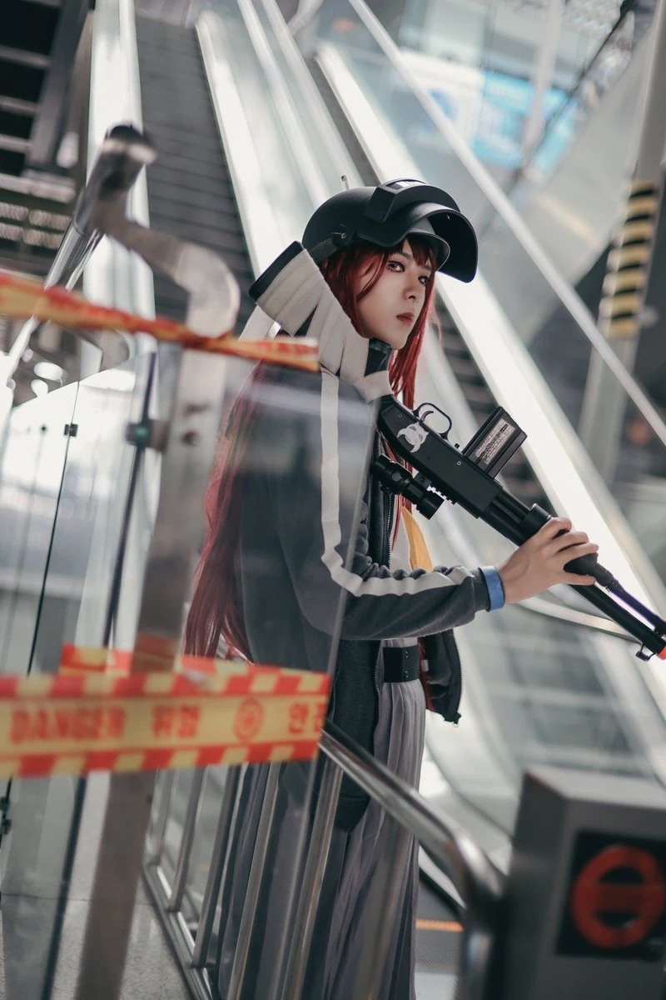

게시 2026-07-17 · 촬영 2026-05-02
2026-05-02 코믹월드블루 아카이브 - 코마카제 라브 📸 Photo by @Patapon_Photo 감사합니다! #블루아카이브 #Bluearchive
모델 정보 미등록
2026-05-02 코믹월드블루 아카이브 - 코마카제 라브 📸 Photo by @Patapon_Photo 감사합니다! #블루아카이브 #Bluearchive #ブルーアーカイブ #코마카제라브 #KomakazeRabu #河駒風ラブ
원 게시자: 두부듬뿍뜸부기 (@tofutteumbugi)
